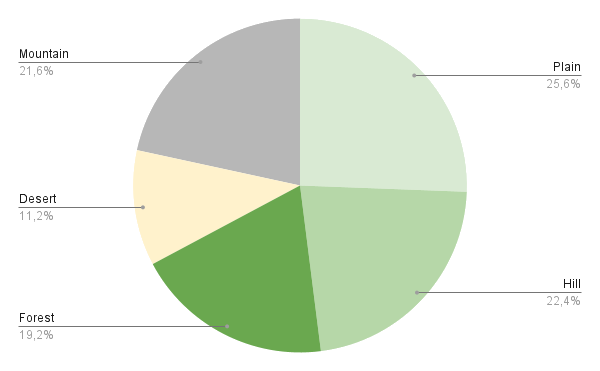

A. Civilizations
- Antic Aztec (Moctezuma)
| Science | Culture | Economy | Army | Industry |
| Army Victory ? Exchange two cards action |
- Medieval Japan (Hōjō Tokimune)
| Industry | Economy | Industry | Science | Culture |
| Extern cases of the field and water cases are considered priority 3 |
- Antic Egypt (Cleopatra)
| Science | Economy | Industry | Army | Culture |
| Wonders cost one 1 resource less |
- Renaissance France (Catherine de Médicis)
| Science | Economy | Industry | Army | Culture |
|
Antic Wonders => 1 more box for Culture card
Medieval Wonders => 2 more boxes for Culture card
Modern Wonders => 3 more boxes for Culture card
|
- Antic Rome (Trajan)
| Science | Economy | Army | Culture | Industry |
| Caravan can start from any city, even if it is not a mature one |
- Modern America (Roosevelt)
| Army | Science | Industry | Culture | Economy |
| Win or use a Natural Wonders Card ? Place it as a boxes on any card |
- Antic Scythie (Tomyris)
| Culture | Army | Science | Culture | Industry |
| Defend or attack from a grassland or hill ? Fight score += 3 |
- Antic Sumer (Gilgamesh)
| Economy | Culture | Science | Army | Industry |
| Win against a barbarian ? Win a resource |
B. Wheel order
=> Start from Barbarian Spawn
=> Nothing
=> Move
=> Box
=> Move
=> Spawn
C. Priority Row
=> Start from grassland
=> Hill
=> Forest
=> Desert
=> Mountain
D. Victory
| Belliciste - Occup 2 state cities | or | Paranoid - Build 2 Army Wonders |
| Technophile - Reach lvl 24 in Tech | or | Learned - Build 2 Science Wonders |
| Explorer - Have 15 pawns close to sea or map border | or | Esthete - Build 2 Culture Wonders |
| Civilized - own 8 cities | or | Pennywise - Build 2 Economy Wonders |
| People - own 5 mature cities | or | Preservationist - Own 2 natural Wonders |
E. Natural Wonders
| Great Mesa - Diamonds | or | Galapagos Island - Stone |
| Everest - Oil | or | Volcanic Sea - Stone |
| Kilimanjaro - Oil | or | Pantanal - Antic |
F. Wonder of the world
Stone => S / Antic => A / Oil => O / Diamond => D
- Science Wonders
Antic Wonders
| Oracle | Exchange 2 neighbors cards each round | 8 | S / A |
| Pyramides | Upgrade 3 lvl 1 cards with same lvl 2 cards | 9 | S / O |
Medieval Wonders
| Potala Palace | Pick 3 diplomacy cards from our opponents | 10 | S / A |
| Porcelain Tower | Upgrade 2 cards | 9 | S / D |
Modern Wonders
| Oxford University (ENSEA) | Upgrade a new card != Science ? Choose any other type | 10 | S / A |
| Kremlin | More reinforcement pawns ? Fight score += 4 | 11 | S / O |
- Economy Wonders
Antic Wonders
| Great lighthouse | Build city on external border like it was on grassland or hill cases | 8 | D / S |
| Colosse | Caravane can move 6 more step in total | 7 | D / O |
Medieval Wonders
| Machu Picchu | Card from grassland or hill are now like forest cases | 10 | D / S |
| Great Zimbabwe | Instead of play a card, place 4 commerce pawns and can move commerce pawns | 9 | D / O |
Modern Wonders
| Maracana Stadium | Economy Card can be played after any card | 10 | D / A |
| Big Ben | Caravan as a neighbor ? Fight score += 2 | 10 | D / S |
- Culture Wonders
Antic Wonders
| Stonehenge | Place a pawn on a hill ? Place pawns on close hills | 7 | A / S |
| Hanging gardens | Each round, place a pawn on a priority 4 or less | 8 | A / D |
Medieval Wonders
| Forbidden City | Each round, kill an enemy pawn stuck to allied pawns | 9 | O / A |
| Chichen Itza | Pawns can be places on any forest cases without ressources | 10 | A / S |
Modern Wonders
| Sydney Opera | Others pawns are considered yours for mature city | 10 | D / A |
| Eiffel Tower | Each round, choose 2 enemy pawns, your enemy will replace one of them by your pawn | 12 | A / O |
- Army Wonders
Antic Wonders
| Petra | Defend ? Fight score += 2 and barbarians can’t kill cities or reinforced pawns | 7 | O / D |
| Terracotta Army | Attack ? Fight score += 2 | 8 | O / A |
Medieval Wonders
| Alhambra | Attack or Defend ? Fight score += 2 | 10 | O / A |
| Venetian Arsenal | Play priority 5 cards ? play it again as priority 1 | 10 | O / D |
Modern Wonders
| Pentagone | Attack ? Fight score += 2 and can attack anything on the entire field | 12 | O / D |
| Ruhr Valley | Defend ? Fight score += 5 | 11 | O / S |
G. Priority card
X = lvl of priority
- Economy
| Bonus: +1 step |
| I | Move 1 caravan from 3 steps on X_field |
| II | 2 caravane and 4 steps on X_field and kill barbarian without gain any box |
| III | 2 caravane and 6 steps on X_field and water and exchange 1 resource with another |
| IV | 3 caravane and 6 steps on X_field and water and exchange 1 play another card as lvl1 |
- Science
- upgrades lvl3 & lvl6 => II
- upgrades lvl10 & lvl14 => III
- upgrades lvl19 & lvl24 => IV => Possibility to move to lvl14 after lvl24
| Bonus: +1 tech upgrade |
| I | Tech wheel += X |
| II | 1 box on a card and tech wheel += X |
| III | Win a resource that you haven’t and tech wheel += X |
| IV | lvl5 ? chose a emplacement and kill any pawns on it and close to it and tech wheel += X |
- Army
| Bonus: +1 fight score |
| I | Reinforce X pawns or 2 attack 2 steps from you with a fight score of X |
| II | Reinforce X pawns or 2 attack 3 steps from you with a fight score of X+1 or X+3 against barbarians |
| III | 2 attack 3 steps from you with a fight score of X+2 (reach water) and reinforce X-number of attack pawns |
| IV | Reinforce X pawns and 3 attack 5 steps from you with a fight score of X+3 (reach anything) |
- Culture
| Bonus: +1 pawn |
| I | Place 2 pawns on X_field close to the city |
| II | Place 2 pawns on X_field close to the city and move 1 pawn on an empty field |
| III | Place 2 pawns on X_field close to the city and 1 pawn close to another pawn |
| IV | ( Chose an enemy pawn from 2 steps to yours and replace it with yours or make it not reinforce if it is ) and place 3 pawns on X_field close to the city |
- Industry
| Bonus: +1 wonders production |
| I | Build a city from 2 steps from a pawn on X_field or build a wonders from X resources
|
| II | Build a city from 3 steps from a pawn or close to an allied caravan on X_field or build a wonders from X resources |
| III | Build a city from 4 steps from a pawn on X_field or build a wonders from ( X==5 ? 7 : X ) resources |
| IV | ( Build a city from 5 steps from a pawn on X_field and 2 pawns on X_field ) or build a wonders from X resources |
H. Diplomacy Card
- Player City
| Player pawns are considered yours for mature cities | If your caravan go to player capital city, place a box on a card of this player and obtain a ressource |
| Attack +2 fight score except against Player | Defense +2 fight score except against Player |
- State City
| Army | Carthage | +1 fight score against other state city for each pawn at 2 steps from the attacker (except Carthage) |
| Army | Kaboul | +3 fight score against other state cities (except Kaboul) |
| Culture | Mohenjo Daro | Priority lvl for placing pawns = priority - 1 |
| Culture | Kumasi | Industry or Culture cards => Forest priority lvl = 1 |
| Science | Seoul | At the beginning of each round, Move a barbarian to a close empty field (not water) |
| Science | Geneva | At the beginning of each round, exchange a player diplomacy card you have to another one |
| Industry | Buenos Aires | Wonders cost 2 less resources if you haven't it |
| Industry | Bruxelles | Wonders cost 1 less resources for each mature city |
I. Stats
- Repartition of the cells

- Resource allocation